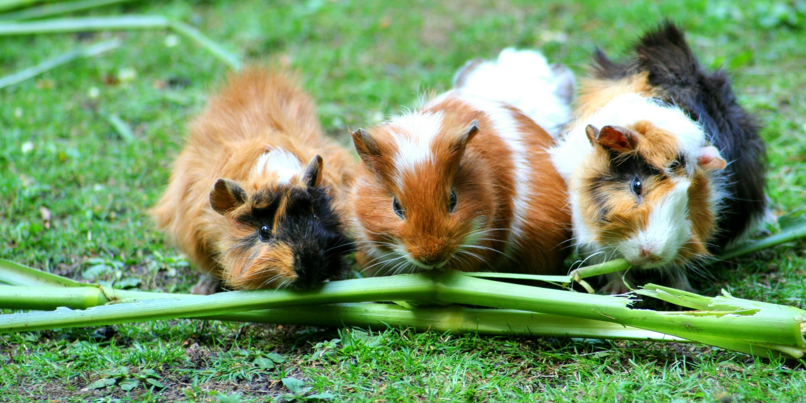

Necesidades Básicas del Bienestar Animal
El Principio de las 5 Necesidades. El Bienestar Animal se basa en el Principio de las 5 libertades; actualizadas entre los especialistas como "las 5 necesidades"

Área Jurídica
1.- Constitución Política del Estado Libre y Soberano de Puebla 2.-Código Penal del Estado Libre y Soberano de Puebla 3.- Ley de Bienestar Animal del Estado de Puebla 4.- Reglamento de la Ley de Bienestar Animal del Estado de Puebla
Tenencia Responsable
Es el conjunto de obligaciones que contrae una persona cuando decide aceptar y mantener un animal de compañía. Debe registrarlo ante la autoridad competente cuando corresponda.

Funciones y Atribuciones
TE RECOMENDAMO.